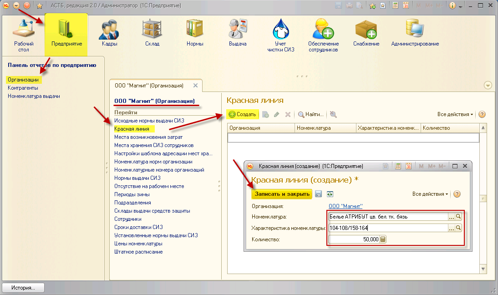

Красная линия – это параметр, созданный для контроля остатков СИЗ и устанавливающий значение, ниже которого не должно опускаться количество того или иного СИЗ на складе. Данный параметр будет учитываться при анализе заказа на поставку СИЗ. Для ввода параметра необходимо зайти в раздел «Предприятие», справочник «Организации». Двойным нажатием выберите нужную организацию, а затем пункт «Красная линия». Нажмите кнопку «Создать», в открывшемся окне выберите номенклатуру, ее характеристику и количество. Для выбранной номенклатуры и ее характеристики будет осуществляться контроль остатков. Если характеристику не указывать, красная линия будет установлена для всех размеров выбранной номенклатуры.
